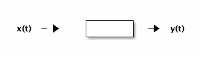

Ditigal Transmitters and Recievers
Table of Contents
- 1. Lecture 1 - History of Communication
- 2. Lecture 2 - A cont. of lecture 1
- 3. Lecture 3
- 4. Lecture ?
- 5. Lecture ?
- 6. Lecture ?
- 7. LEcture ?
- 8. LEcture ? -
- 9. TODO get units for
- 10. TODO insert lecture from previous week in here.
- 11. TODO Lecture ? - HW2 review: Hw4; due 2/21; 3.4-2; 3.6-1; 3.7-3 – see next page; 3.7-4
- 12. Lecture ? - Bell 103 modems specs?
- 13. Lecture ? - DSB - SC Double Sideband - Suppresed Carrier
- 14. Lecture ? - EXAM ch1,2,3 4.1-4.3; AM
- 15. Lecture ? - Efficency
1 Lecture 1 - History of Communication
This is mt, I have not a copy of these notes. Mainly discussed how in the last 120 years we/society has gone from using semophores to using modern fast as light coms.
2 Lecture 2 - A cont. of lecture 1
More info I don't have a copy of….
3 Lecture 3
4 Lecture ?
:DATE:
Use correlators to match input to possible transmitted waveforms
5 Lecture ?
5.1 Transmitter

Figure 1: internals of Ditigal reciever with two-bit decode
5.2 Reciever
two bits per symbol - four possible wave forms
| symbol | bits | four possible waveforms |
| 0 | 00 | 00 |
| 1 | 01 | 900 |
| 2 | 10 | 1800 |
| 3 | 11 | 2700 |
6 Lecture ?
6.1 Fourier Transfrom
- F {g(t)} = G(f) = \(\int_{-\inf}^{\inf} g(t) e^{-j2\pi ft}\)
- F \(^{-1}\) {G(f)} = g(t) = \(\int_{-\inf}^{\inf} G(f) e^{j2\pi ft}\)
6.1.1 TODO Properties: verify that 2.1 is correct
- Linearity
- F \({a_1 x_1(t) + a_2 x_2(t)}\) = a1 F \({x_1(t)}\) + a2 F \({x_2(t)}\)
- Time Shift
- Frequency Property
- F \(^{-1}{X(f-f_0)} = e^{j2\pi f_0t} \int_{-\inf}^{\inf}{x(t)}\)
6.2 TODO Graham-Schmidt: check matrix algebra book on this topic.
:DEADLINE:
- Signals S1(t),…,Sm(t)
- basis functions φn(t),…,φn(t), N ≠ M
- \(S_i(t) = \sum{n=1}{N}{S_{in} \phi_n(t)}\)
- Si = [Si1 Si2 … Sin]
6.2.1 1st signal
Es1 = \(||S_{1}||^2\)
\(\phi_1 = \frac{S_1(t)}{\sqrt{E_{s1}}}\)
\(S_{11} = \sqrt{E_{s1}}\)
6.2.2 2nd – Nth signal
Creating a new basis function
S21 = <S2(t),φ1(t)>
r2(t) = S2(t) - S21 φ1(t) <– orthogonal to φ1(t)
If remainted r_i(t) = 0 skip the steps below
- The part of signal 2 that can't be represented by φ1(t).
Er2 = ||r2(t)||2
φ2(t) = \(\frac{r_2(t)}{\sqrt{E_{r2}}}\)
S22 = \(\sqrt{E_{r2}}\)
- others
Sni = <Sn(t) , φi(t)> for φi(t) which are defined.
ri(t) = Si(t) - ∑{Sin} φn(t)
6.3 Fourier Transfrom
- F {g(t)} = G(f) = \(\int_{-\inf}^{\inf} g(t) e^{-j2\pi ft}\)
- F \(^{-1}\) {G(f)} = g(t) = \(\int_{-\inf}^{\inf} G(f) e^{j2\pi ft}\)
6.3.1 TODO Properties: verify that 2.1 is correct
- Linearity
- F \({a_1 x_1(t) + a_2 x_2(t)}\) = a1 F \({x_1(t)}\) + a2 F \({x_2(t)}\)
- Time Shift
- Frequency Property
- F \(^{-1}{X(f-f_0)} = e^{j2\pi f_0t} \int_{-\inf}^{\inf}{x(t)}\)
7 LEcture ?
:DATE:
7.1 Distortionless System
x(t) \(->\) \box \(->\) y(t)
7.1.1 Acceptable
- Amplification//
$y(t) = K x(t)$//
- Delay
\(y(t) = x(t-t_0)\) , $t0: positive integer, positive required for causality$//
- Overall//
\(y(t) = K x(t-t_0)\)
7.2 Freq representation
\(Y(f) = K e^{-j2\pi ft_0} X(f)\) = \(H(f)X(f)\) Linear time invariant. where \(H(f) = Ke^{-j2\pi ft_0}\)
\(h(t) = K\delta(t-t_0)\)
7.3 Filters
- ideal
- realistic
- Lowpass
- Highpass
- Bandpass
- Bandstop
| filter type | ideal | realistic |
| lowpass | sharp rect around center | hill flat top |
| highpass | ||
| bandpass | ||
| bandstop |
7.4 Bode rep
\(H(f) = Ke^{-j2\pi ft_0}\)
\(|H(f)| = K <- constant Mag(gain)\)
\(\angle{H(f)} = -2\pi ft_0 <- linear, slope = -2\pi f\)
Group Delay: \(t_g(f) = \frac{-1}{2\pi} \frac{d}{df}(\angle{H(f)})\)
8 LEcture ? -
:DATE:
8.1 TODO Project
8.2 Fourier Series - Fourier Transform Relationship
8.2.1 Fourier Series
F.S. \(g(t) = \sum_{-\inf}^{\inf} G_n e^{jn2\pi f_0t}\)
F.T. \(G(g) = *F*{g(t)}\) = ∑-infinf Gn F {ejn2π fot}$
\(= \sum{G_n \delta(f-f_0)}\) -inf -> inf$ .
8.3 Energy spectral density???????????
\(E_g = \int_{-\inf}^{\inf}|G(f)|^2df\)
\(x(t) -> h(t) -> y(t)\)
\(X(f) -> H(f) -> Y(f)\)
\(E_y = \int_{-\inf}^{\inf}|X(f)H(f)|^2 df\) \(= \int_{f_0-\delta{f}}^{f_0+|delta{f}}\)
Energy Spectral Density \(\Psi_x (f_0) = \lim_{\Delta f -> 0}\frac{1}{\Delta f}\int_{f_0-\frac{\Delta f}{2}}^{f_0+\frac{\Delta f}{2}}|X(f)|^2 df\) \(=|X(f_0)|^2\)
Energy \(E_x = \int \Psi_x(f) df\)
Energy int bandwith *B centered at F1
\(\int_{-f_1-\frac{*B*}{2}}^{-f_1+\frac{*B*}{2}}\Psi_x(f) df =\int_{f_1-\frac{*B*}{2}}^{f_1+\frac{*B*}{2}}\Psi_x(f) df\)
9 TODO get units for
let: $g(t) = Π(\frac{t}{\tau}
What banwidth capacity do we need to pass exactly \(90%\) of this signal energy.
\(E_g = \int |g(t)|^2dt = \tau\) $g(t) -> "Ideal LPF bandwidth B" -> y(t) 90%Eg = 0.9Τ energy
10 TODO insert lecture from previous week in here.
11 TODO Lecture ? - HW2 review: Hw4; due 2/21; 3.4-2; 3.6-1; 3.7-3 – see next page; 3.7-4
DATE:
11.1 Freq shift
\(g(t)cos(2\pi f_0t) <==> \frac{1}{2}[G(f-f_0)+G(f+f_0)]\)
11.2 Project specs
11.2.1 Important params
- Fs = sample Rate; 8000
- bit rate Rb 214
- \(\frac{F_s}{R_b} = Samples per bit\); 37.3
$g(t) = Π(\frac{t}{|tau}$
$Eg = τ$
$y(t) = g(t)*h(t)$
$Y(f) = G(f)H(f)$
H(f) ideal LPF bandwidth B
What is B to obtain: $Ey = 0.9 Eg$
\(E_y = \int_{-\inf}^{\inf}|Y(f)|^2 df = \int_{-\inf}^{\inf}|G(f)H(f)|^2 df = \int_{-B}^{B}|G(f)|^2 = 2\inf_{0}^{B}\tau sinc^2(\pi f \tau) df = -.0\tau\)
12 Lecture ? - Bell 103 modems specs?
:DATE:
12.1 A history of Modem Sounds:
200 Baud to 56K
- Early modems sounds tonal, and later, higherspeed modems sounds noisy.
- Connection sequence occurs
- YT: ckc6XSSh52w
- oona.windytan.com/posters/dialup-final.png
- Short time fourier transform
12.2 DONE Choices: Get clarification of stopbits; Use two '1' bits as stop signal.
- Answering and originating tones, we will use higher tones.
- HIgh tones are answer tones
- Data rate 100 bps
- USE 2 stop bits. Not the same as the 0start and 1 stop bit.
- Use continuous phase, no discontinuity. [[img]
12.3 TODO HW 5 due 2/26; 3.8-4, 4.2-1, 4,2-7
12.4 Power Spectral Density PSD
Almost a perfect parallel to ESD Watts/Hz
- Computed differently
- Autocorrelation \(R_g(\tau) = \lim_{t\to\inf} \frac{1}{T} \int_{\frac{-T}{2}}^{\frac{T}{2}} g^{*}(t) G(t+\tau)\)
- Power Spectral Density $Sg(f) = F {Rg(τ)}
- ESD
- autocorrelation
- \(\psi_g(\tau) = \int_{-\inf}^{\inf} g*(t) g(t+\tau) dt\)
- ESD $Ψg(f) = F {ψg(τ)}
- Where would we use PSD?
- A set of data [[img]
- Can't take the FT of binary data.
12.5 LTI Systems
 \(x(t)) \to\) \(\to y(t)\)
ESD \(\Psi_y(f) = \Psi_x(f)|H(f)|^2\)
ESP \(S_y(f) = S_x(f)|H(f)|^2\)
12.6 Noise - AWGN Additive White Gaussian Noise
13 Lecture ? - DSB - SC Double Sideband - Suppresed Carrier
\(S_{DSB-SC}(t) = m(t) cos(2\pi f_ct)\)
$SDSB-SC(f) = \frac{1}{2}[M(f-f_c)+M(f+f_c)]$
shift up by fc, shift down by fc
13.1 Analyze Frequency and Phase Error
Assume \(\Delta f\) is small Case 1: Frequency error, Δ f≠ 0, arbitrarily set δ θ
Case2: no Freq error, Δ f = 0, Δθ arbitrary.
Assume r(t)=SDSB-SC No noise in channel
\(y(t) = m(t) cos(2\pi f_ct) cos(2\pi f_c\Delta f)t + \Delta\theta)\) \(= \frac{1}{2}m(t)[cos(2\pi \Delta ft+\Delta \Theta)+cos(2\pi (2f_c+\Delta f)t+\Delta \theta)]\) \(=\frac{1}{2}m(t)cos(2\Pi\Delta ft+\Delta \Theta) + \frac{1}{2} cos(2\pi (2f_c + \Delta f)t + \Delta \theta)\)
\(z(t) = \frac{1}{2} m(t) cos(2\pi \Delta ft+ \Delta\theta )\)
case 1: $z(t) = \frac{1}{2} m(t) cos(2π Δ ft)$
Unacceptable, even if Δ f is very small
case 2: \(z(t) = \frac{1}{2} m(t) cos(\Delta \theta)\) Acceptable if Δθ is small (much smaller then 90°)
13.1.1 Delta Θ does not affect the noise level.
13.2 Noise - AWGN
Additive: noise adds to the signal \(r(t) = s(t) + n(t)\) r-recieve, s-transmit, n-noise
White: Power Sectral Density is constant \(S_n(f) = \frac{\eta}{2} Watts/Hz\) S-Power spectral density of noise. eta/2 becuase half power is in negative freaks.
Gaussian: probability density function of noies amplitude(voltage)
Noise: naturally occuring random source
VAriance of noise is the power of that signal.
13.3 AM (Double Sideband-Large Carrier) dsb-lc
\(S_AM(t) = [A+ m(t)]cos(\omega_c t), \omega_c = 2\pi f_c\) \(S_AM(f) = \frac{1}{2}[\delta(f-f_c)+\delta(f+f_c)]+\frac{1}{2}[M(f-f_c)+M(f+fc)]\)
14 Lecture ? - EXAM ch1,2,3 4.1-4.3; AM
DATE:
\(S_{am}(t) = [A + m(t)]cos(2\pi f_ct)\) \(S_{am}(f) = \frac{A}{2}[\delta(f-f_c) + \delta(f+f_c)] + \frac{1}{2} [M(f-f_c) + M(f+f_c)]\) A/2 part is carrier, and 1\2 part is sidebands.
define peak value of m(t), mp = max|m(t)| let A >= mp
define modulation index \(\mu = \frac{m_p}{A}\)
If μ ≤ 1 the envelope detector can be used.